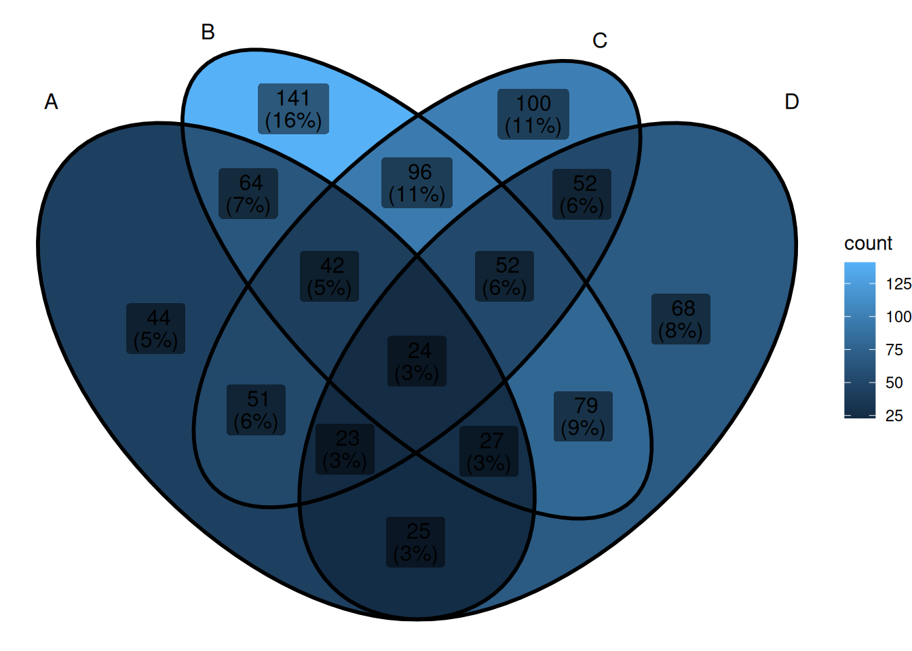
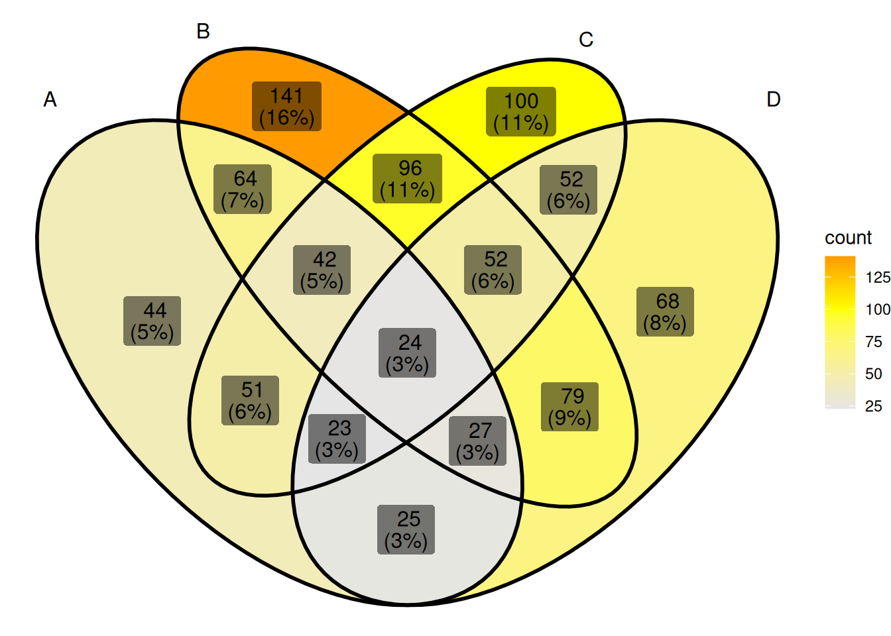

# Installing necessary packages
if (!requireNamespace("ggplot2", quietly = TRUE)) {
install.packages("ggplot2")
}
if (!requireNamespace("ggVennDiagram", quietly = TRUE)) {
install.packages("ggVennDiagram")
}
if (!requireNamespace("VennDiagram", quietly = TRUE)) {
install.packages("VennDiagram")
}
# Load packages
library(ggplot2)
library(ggVennDiagram)
library(VennDiagram)Veen Plot
For the visualization of Venn diagrams, the commonly used R packages are ggVennDiagram and VennDiagram. Compared with the VennDiagram package, ggVennDiagram has the advantages of being applicable to more groups, adapting to ggplot2 syntax, and flexibly setting output formats, and is easier to learn and post-process. However, the set color of ggVennDiagram can only be set to a continuous gradient color related to the number of elements, and cannot be set to a discrete color with one color for each set. VennDiagram is just the opposite, so you can choose which R package to use for drawing according to specific needs.
Example
Setup
System Requirements: Cross-platform (Linux/MacOS/Windows)
Programming language: R
Dependent packages:
ggplot2;ggVennDiagram;VennDiagram
Data Preparation
The data uses a simulated gene set. Assume that we have multiple groups of different treatments A~D, each of which produces a certain number of differentially expressed genes under different treatments. The input format required by ggVennDiagram is a list. Each element in the list needs to have a corresponding name and the sub-elements it contains.
genes <- paste("gene",1:1000,sep="")
set.seed(123)
x <- list(A=sample(genes,300),
B=sample(genes,525),
C=sample(genes,440),
D=sample(genes,350))Visualization
Tip
ggVennDiagram basic parameters:
-
x: list collection data to be input -
category.names: collection name, default is the name defined in list -
show_intersect: when set to TRUE, output interactive images -
set_color: the stroke color of the collection, you can enter one or the same number of colors as the collection -
set_size: the size of the collection label -
label: the type of the numeric label in the collection, you can select an input from “both”, “count”, “percent”, “none”, the default is “both†-
label_alpha: the background transparency of the numeric label -
label_geom: the layer position of the numeric label, you can select one from “label”, “text”, the default is “label”, when “text†is entered, the label will be located below the collection color block -
label_color: the color of the numeric label -
label_size: the size of the numeric label -
label_percent_digit: the number of decimal places reserved for the numeric label -
label_txtWidth: In interactive mode, the width of the text box showing the intersection element -
edge_lty: The line type of the set stroke, the default is “solid”, other line types that can be set are: “blank”, “solid”, “dashed”, “dotted”, “dotdash”, “longdash”, “twodash†-
edge_size: The line width of the set stroke -
force_upset: Whether to use the upset graph to show the intersection -
nintersects: The number of sets used for drawing, if NULL, all sets are used -
order.intersect.by: The arrangement of intersections when drawing the upset graph -
order.set.by: The arrangement of sets when drawing the upset graph -
relative_height: The relative height of the upper bar graph when drawing the upset graph -
relative_width: The relative width of the left bar graph when drawing the upset graph
1. Basic Venn Diagram
# Basic Venn Diagram
ggVennDiagram(x)

This figure shows the intersection of differentially expressed genes under different treatments.
2. Beautify the Venn diagram
The color of the set in ggVennDiagram is a continuous variable set according to the number of elements contained in the set. The set color can be modified by functions such as scale_fill_gradient or scale_fill_gradient2 in ggplot2. For example, the following code can be used to implement continuous color setting:
# Color settings
ggVennDiagram(x) + scale_fill_gradient(low="grey90",high = "red")You can also use scale_fill_gradient2 to define the colors more freely:
# Color settings
ggVennDiagram(x) + scale_fill_gradient2(low="grey90",mid = "yellow",midpoint = 100,high = "red")

More complex color settings can be accomplished by calling the palette:
# Color settings
ggVennDiagram(x) + scale_fill_distiller(palette = "Set1") It’s also very easy to customize the palette:
# Color settings
cols <- c('#E64E00','#65B48E','#E6EB00','#E64E00')
pal <- colorRampPalette(cols)
ggVennDiagram(x) + scale_fill_gradientn(colors = pal(10)) # Numbers are the number of color levelsggVennDiagram can also customize the border of the collection through edge_lty, edge_size, and set_color.
# edge settings
ggVennDiagram(x, set_color=c("blue","red","green","purple"), edge_lty="dashed", edge_size=2)The font settings can be modified via the following parameters:
# Font Settings
# The most special parameter among the following is label. Among the four optional inputs of label, "percent" means only displaying percentage, "count" means only displaying quantity, and "none" means not displaying.
ggVennDiagram(x, set_size = 5, label = "percent", label_alpha = 0,
label_color = "red", label_size = 5, label_percent_digit = 2)3. VennDiagram
We can also draw Venn diagrams using the VennDiagram package.
Tip
venn.diagram basic parameters:
-
x: list collection data to be input -
filename: output file name -
imagetype: output file type can be selected from “tiff”, “png”, “svg†-
units: image size unit can be selected from “cm”, “px”, “unit†-
height: image height -
width: image width -
resolution: image resolution -
compression: image compression algorithm -
scaled: display collection size according to proportion -
alpha: collection transparency -
fill: collection color -
col: line color -
lwd: line thickness -
lty: line shape, 1 is solid line, 2 is dotted line, blank is no line -
label.col: number color -
cex: number size -
cat.dist: distance between label and collection -
cat.pos: angle of label relative to collection -
cat.cex: Label font size -
cat.col: Label color
The core function of the VennDiagram package is venn.diagram. This function cannot draw images directly to the drawing board. You can draw images to the drawing board by cooperating with the grid::grid.draw() function.
p <- venn.diagram(x,filename = NULL);grid::grid.draw(p)The biggest difference between VennDiagram set color settings and ggVennDiagram is that the colors are set as discrete colors according to different sets. The setting method is as follows:
# When only one color is entered, all sets display the same color. When the number of entered colors matches the number of sets, each set has its own color. You can also use a specific naming method to accurately set the color of the set.
p <- venn.diagram(
x, filename = NULL,
fill = c("A"="#2E75A2","B"="#FBD75F","C"="#379337","D"="#C13A3C"),
alpha= 0.3);grid::grid.draw(p)Line settings:
p <- venn.diagram(
x, filename = NULL,
col = c("A"="#2E75A2","B"="#FBD75F","C"="#379337","D"="#C13A3C"),
lwd = 0.3, lty = 2);grid::grid.draw(p)Font settings. If you need to adjust the position, please use the cat.dist, cat.pos parameters:
p <- venn.diagram(
x, filename = NULL,
cat.col =c("A"="#2E75A2","B"="#FBD75F","C"="#379337","D"="#C13A3C"),
label.col = "red");grid::grid.draw(p)Display the size of the collection in proportion. This mode is only applicable to two collections:
p <- venn.diagram(
x[c("A","B")], filename = NULL, fill= c("A"="#2E75A2","B"="#FBD75F"),
scaled = T
);grid::grid.draw(p)Application
In this figure, R1-R4 are four different genotypes. Since R2 and R4 have exactly the same genotype at the target gene, the differentially expressed genes shared by R2 and R4 may be the downstream of the target gene [4].
Reference
[1] Yu Y, Li W, Liu Y, Liu Y, Zhang Q, Ouyang Y, Ding W, Xue Y, Zou Y, Yan J, Jia A, Yan J, Hao X, Gou Y, Zhai Z, Liu L, Zheng Y, Zhang B, Xu J, Yang N, Xiao Y, Zhuo L, Lai Z, Yin P, Liu HJ, Fernie AR, Jackson D, Yan J. A Zea genus-specific micropeptide controls kernel dehydration in maize. Cell. 2025 Jan 9;188(1):44-59.e21. doi: 10.1016/j.cell.2024.10.030. Epub 2024 Nov 12. PMID: 39536747.